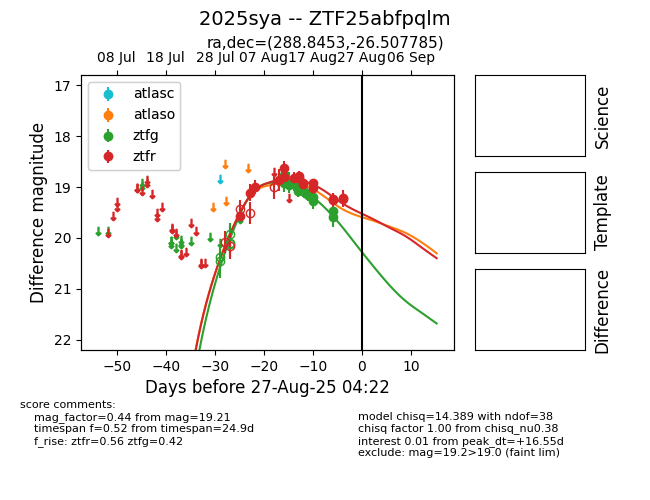

Target 2025sya at 2025-08-27 06:32, see:
FINK: fink-portal.org/ZTF25abfpqlm
Lasair: lasair-ztf.lsst.ac.uk/objects/ZTF25abfpqlm
ALeRCE: alerce.online/object/ZTF25abfpqlm
TNS: wis-tns.org/object/2025sya
YSE: ziggy.ucolick.org/yse/transient_detail/2025sya
alt names
ZTF25abfpqlm (ztf,fink)
2025sya (tns,yse)
coordinates:
equatorial (ra, dec) = (288.8453,-26.50778)
galactic (l, b) = (11.2044,-16.65257)
photometry
last atlaso=18.89, ztfg=19.48, ztfr=19.54
1 atlaso, 13 ztfg, 19 ztfr detections
